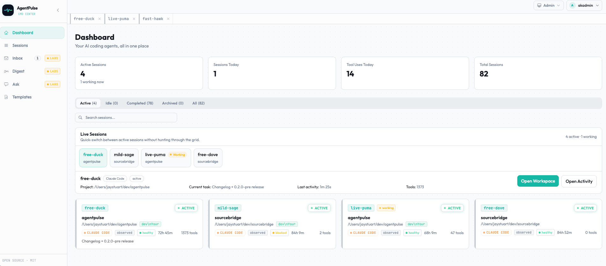

One dashboard for every Claude Code, Codex and Copilot session
AgentPulse is an open-source, self-hosted command center for AI coding agents. See what every session on every machine is doing, launch and steer agents from the browser, and pick up where you left off from any device.

The problem it solves
Run three or four coding agents at once and the terminal stops being a good interface. Which tab finished? Which one is waiting for a permission prompt? What did you ask the one on the other laptop an hour ago? AgentPulse collects hook events from each agent and shows them in one live view, with a chat-style history of every prompt you've sent.
What you can do with it
Monitor sessions in real time
Every session gets a memorable name like bold-falcon, a live status and a searchable timeline of prompts and tool calls.
Work across machines
A small relay on each machine forwards events to one AgentPulse server. Filter the dashboard by machine, or see them all.
Launch and steer agents
Start headless or interactive sessions from templates, send follow-up prompts, stop and retry, and route each launch to the right host.
Open it from any device
Self-host it behind SSO and check on your agents from a phone or another computer. Optional Telegram approvals are in Labs.
Drive it over MCP
The @craze0/agentpulse-mcp server lets Claude Code, Codex CLI or any MCP client list, search, launch and steer sessions, with scoped API keys.
Keep your data
MIT licensed and self-hosted. SQLite by default, PostgreSQL for production, and a per-machine exclude list for directories that should never be reported.

Install
On macOS or Linux, one command installs AgentPulse with Bun and SQLite, starts the dashboard and local supervisor, and configures Claude Code and Codex hooks:
curl -fsSL https://raw.githubusercontent.com/jstuart0/agentpulse/main/scripts/install-local.sh | bashThen open http://localhost:3000. Windows, Docker, remote-server and Kubernetes installs are in the README.
Guides
- How to monitor multiple Claude Code sessions across machines
- Check on and control Claude Code from another computer or your phone
- Self-host an AI coding agent dashboard with Docker, Kubernetes and SSO
- Observability vs. orchestration for AI coding agents
- Control your coding agent fleet from Claude Code over MCP